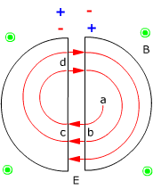

| Ciclotrón  Esencialmente consiste en dos semicilindros metálicos (Se les llama 'des ') entre los cuales hay un campo eléctrico cuyo sentido va cambiando periódicamente. Además hay un campo magnético perpendicular al eléctrico Si se introduce en una de las 'des' una partícula con velocidad
pequeña, ésta describirá una trayectoria circular
ab hasta llegar a la zona del campo eléctrico bc donde recibirá
un 'empujón' que aumentará su velocidad. El truco de la cuestión está en conseguir que, cuando la partícula llegue a la zona del campo, éste tenga el sentido adecuado para empujarla, luego cada media vuelta de la partícula deberá invertirse el sentido del campo. Por tanto el período de cambio del campo tendrá que ser igual a la mitad del período de rotación de la partícula que es constante (No depende del radio) |